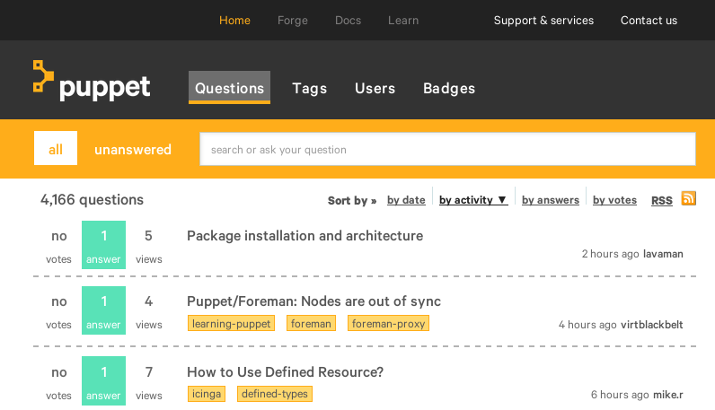
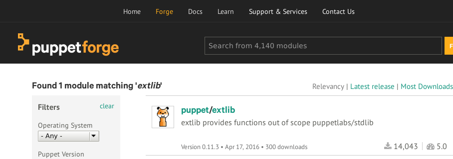

What's Wrong With My Puppet?
OSDC 2016, Berlin
It's always something
with software
Things with Puppet (e.g.)
- weird behavior of the agent or master
- the manifest or catalog fails
- complex manifests don't function as expected
1. Understanding behavior
strace
The wrench
config print
Let's see it in action
$ strace -e trace=file \
puppet apply -e 'notify { "test": }' \
2>&1 | grep 'puppet\.conf'
stat("/home/ffrank/.puppetlabs/etc/puppet/puppet.conf", \
{st_mode=S_IFREG|0644, st_size=225, ...}) = 0
open("/home/ffrank/.puppetlabs/etc/puppet/puppet.conf", \
O_RDONLY|O_CLOEXEC) = 7
$ strace -e trace=file \
puppet apply -e 'package { "test": }' \
2>&1 | grep 'apt\.rb'
stat("/home/ffrank/gems/gems/CFPropertyList-2.3.2/lib/puppet/provider/package/apt.rb", \
0x7fff342fc620) = -1 ENOENT (No such file or directory)
stat("/home/ffrank/gems/gems/activesupport-4.2.1/lib/puppet/provider/package/apt.rb", \
0x7fff342fc620) = -1 ENOENT (No such file or directory)
stat("/home/ffrank/gems/gems/addressable-2.4.0/lib/puppet/provider/package/apt.rb", \
0x7fff342fc620) = -1 ENOENT (No such file or directory)
stat("/home/ffrank/gems/gems/aspector-0.14.0/lib/puppet/provider/package/apt.rb", \
0x7fff342fc620) = -1 ENOENT (No such file or directory)
...
stat("/home/ffrank/gems/gems/puppet-4.4.1/lib/puppet/provider/package/apt.rb", \
{st_mode=S_IFREG|0644, st_size=3354, ...}) = 0
$ puppet config print all | grep 'puppet\.conf'
config_file_name = puppet.conf
config = /home/ffrank/.puppetlabs/etc/puppet/puppet.conf
So the option is named
config...
$ puppet config print config
/home/ffrank/.puppetlabs/etc/puppet/puppet.conf
$ puppet config print config --section master
$ puppet config print config --section agent
Alternative call
$ puppet agent --configprint all
$ puppet master --configprint masterport
$ puppet apply --configprint all | grep catalog_cache_terminus
2. failure forensics
$ puppet agent --test
...
err: Could not retrieve catalog from remote server:
Error 400 on SERVER:
undefined method `empty?' for nil:NilClass at
$ puppet agent --test
...
Error: Failed to apply catalog:
undefined method `ancestors' for nil:NilClass
Needs some context!
Meet the--trace option.
Let's see it in action
ffrank@fflaptop:~$ puppet agent --test
Error: Evaluation Error: \
Error while evaluating a Function Call, (<unknown>): \
found character that cannot start any token \
while scanning for the next token at line 4 column 7 \
at [...]/env/production/manifests/site.pp:45:8 \
on node fflaptop.local
Looking at line 45 of site.pp will help,
but let's practice tracing instead
but let's practice tracing instead
ffrank@fflaptop:~$ puppet agent --test --trace
Error: Evaluation Error: ...
.../lib/puppet/indirector/rest.rb:208:in `is_http_200?'
.../lib/puppet/indirector/rest.rb:106:in `find'
.../lib/puppet/indirector/indirection.rb:194:in `find'
.../lib/puppet/configurer.rb:377:in `block in retrieve_new_catalog'
.../lib/puppet/util.rb:386:in `block in thinmark'
/usr/lib/ruby/2.1.0/benchmark.rb:294:in `realtime'
.../lib/puppet/util.rb:385:in `thinmark'
.../lib/puppet/configurer.rb:376:in `retrieve_new_catalog'
$ puppet master --compile fflaptop.local --trace
Notice: Scope(Class[main]): compiling site.pp
Error: Evaluation Error: Error while evaluating a Function...
.../lib/psych.rb:376:in `parse'
.../lib/psych.rb:376:in `parse_stream'
.../lib/psych.rb:324:in `parse'
.../lib/psych.rb:251:in `load'
.../lib/hiera/backend/yaml_backend.rb:19:in `block (2 levels) in lookup'
.../lib/hiera/filecache.rb:53:in `read_file'
.../lib/hiera/backend/yaml_backend.rb:18:in `block in lookup'
Error: undefined method `ref' for nil:NilClass on node vagrant.edward.local
.../puppet/resource/catalog.rb:527:in `block in to_catalog'
.../puppet/resource/catalog.rb:515:in `each'
.../puppet/resource/catalog.rb:515:in `to_catalog'
.../puppet/resource/catalog.rb:402:in `to_resource'
.../puppet/parser/compiler.rb:23:in `compile'
.../puppet/indirector/catalog/compiler.rb:116:in `block (2 levels) in compile'
.../puppet/util/profiler/none.rb:6:in `profile'
.../puppet/util/profiler.rb:31:in `profile'
.../puppet/indirector/catalog/compiler.rb:114:in `block in compile'
.../puppet/util.rb:161:in `block in benchmark'
...
3. it's working but it's weird
# in node alice
@@backup_job { 'alice_files': ... }
bob
Backup_job<<| |>>
Non-functional resources
are always awkward
Debug mode is often inconclusive
What you want to do
is inspect the catalog
Let's do that then
$ puppet catalog find | less
Notice: Compiled catalog for exporter in environment production in 1.75 seconds
{
"tags": ["settings","httpfile","exporter","class","node"],
"name": "fflaptop.local",
"version": 1461197958,
"code_id": null,
...
"resources": [
{
"type": "File",
"title": "/tmp/README.md",
"tags": ["file","class","httpfile"],
"file": "[...]/env/production/manifests/site.pp",
"line": 14,
"exported": false,
"parameters": {
"ensure": "file",
"source": "https://raw.githubusercontent.com/puppetlabs/facter/master/README.md",
"backup": false
}
},
For the thorough
1. Find out where the catalog is cached
$ puppet agent - -configprint catalog_cache_terminus
2a. for
json
$ puppet agent - -configprint client_datadir
yaml
$ puppet agent - -configprint clientyamldir
...one of these holds
<certname>.json or .yaml
1. Request a YAML copy
$ puppet agent --test --catalog_cache_terminus yaml
2. Launch the REPL
$ irb -rpuppet -ryaml
3. Try and load the catalog
irb(main):001:0> data = YAML.load(File.new('.../client_yaml/catalog/fflaptop.local.yaml'))
oops...
Puppet::Error: Could not parse for environment *root*:
no 'environments' in
{:current_environment=>#<Puppet::Node::Environment:0x0...
irb(main):002:0> Puppet.initialize_settings
=> "notice"
Now try again
irb(main):003:0> data = YAML.load(File.new('.../catalog/exporter.yaml'))
=> #<Puppet::Resource::Catalog:0x00000000928100 @in_to={Stage[main]{...
Okay we got a catalog. Now what?
irb(main):004:0> require 'pry' ; binding.pry
[1] pry(main)> cd data
[2] pry(#<Puppet::Resource::Catalog>):1> ls
Use pry
Do get help

Ask Puppet
 http://ask.puppet.comThe Forge
 http://forge.puppet.comThe Mailing List
https://groups.google.com/forum/#!forum/puppet-usersThanks for listening
Images
- http://www.babygaga.com/buzz/show/1066/when-your-fur-baby-meets-your-human-baby-how-to-make-the-introduction-as-smooth-as-possible
- http://www.sammyspetboarding.com/cleaning.htm
- http://www.playbuzz.com/shacharo/5-reasons-why-llama-is-the-funniest-animal-ever
- http://i.giphy.com/c5eqVJN7oNLTq.gif
- http://www.ranker.com/list/cutest-pug-pictures/pet-project